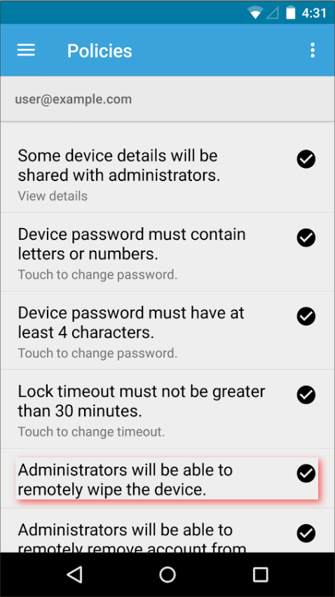

Boundaries between personal and professional life
Boundaries that have no explicit documentation or contract can be a pain to deal with. Because we are human, those boundaries can become fluid and move both closer and farther, depending on mood, goodwill, the stance of the moon and the number of times Sandstorm has been on the radio today.
Personal boundaries
You yourself have boundaries. They may not always be apparent. They may not always be the same. But they are there and for a good reason. They protect the integrity of your personality. Giving in to your boundaries can be of no consequence one time, yet completely destroy your feeling of self-worth the next time around.
Exploring your own boundaries can be a good thing, but only do it of your own accord and never let it be forced by someone else.
Like me on Facebook
You may have seen or heard a message like the following from your employer:
Could you go ahead and click like on the post I just added to Facebook? That would be great, okay?
This immediately makes me feel like Milton.
The reply I gave, to a similar question:
Well, I do not have a Facebook account.
I have my own reasons for not having a Facebook account. That is my own choice. Nowhere in the contract it said I had to have a Facebook account.
The following, astonishing, reply came back:
Okay, could you then create a Facebook account and click the Like button?
I was astonished. But I kept my ground and didn't let anyone cross my boundaries here. There was no reason for my employer to force me to do this, so I replied:
No, I'm not going to do that. I am not going to create a Facebook account.
My employer did want to know why this was and why I defied his request, but I still stood my ground and responded that he could not ask this of me.
All your phones are belong to us
As a good worker bee, I have both my personal and professional Google accounts connected on my phone. It allows me to sync meetings, have all contacts in my phone, as well as reach company mail and personal mail at the same time.
In general, it allows me to be more productive on-the-fly.
From what I've been told, the following happened purely accidental, because someone had flipped a switch in configuration land, of which they did not know the effect.
But during the weekend, in which no communication between the office and the employees happens, suddenly my phone had installed the Google Apps Device Policy app.
When next I unlocked my mobile phone, I got asked to agree with a number of policies. Amongst others, there were policies like forcing encryption on a phone. I am perfectly fine with upping the security for a phone that holds sensitive information.
However, I read through all policies and one screen gave me the following:

I was outraged. This is my personal device. It is not expected of me to have it connected to my office account and I do that of my own accord. Then suddenly, the employer decides that it should be able to wipe all your personal data, from a device that is not owned by them?
I immediately disconnected all office accounts from my phone. The next monday one of my fears came true. I explained what happened and asked if anyone agreed with the policies.
Almost all were like:
Yeah, it's really easy. Just click "Accept" and "Next" a bunch of times.
Everyone is already programmed to accept whatever policy or agreement box we shove at them.
In retrospect, the company apologized for the inconvenience and said it was a setting they weren't aware of what it did. For some time I kept my office accounts disconnected, but no longer.
If they DID want to enforce these policies, however, they could have still done that in a sensible way by supplying the employees with a company phone. And next time, don't fiddle with settings you don't know, in the weekend.
All the commerce goodness
Still, on a regular basis, I get asked to join people on LinkedIn, like their posts, connect to obscure professional networks, re-tweet and fill in circle jerk questionnaires. Some, I do act on, if I think it's in my personal interest or it does not undermine my personal life or beliefs, but most of them are blatantly ignored.
I hope this article inspires the reader to think twice before allowing their employer to take over their personal life and transform it into business value.